Appendix A: Create TLS certificates
The procedure set out in this section guides you through the exact steps of setting up Transport Layer Security (TLS) keys for your DFSP implementation when you wish to work with your own Certificate Authority instead of a well-known and trusted provider. At a high level, the process comprises the following steps.
-
Create a keystore to hold your keys.
-
Create the root key pair of your Certificate Authority (CA).
-
Create the intermediate key pair of your CA.
-
Create a server key pair and a client key pair.
-
Create the server certificate chain of trust (that is, sign your server key pair with your CA).
-
Export your server certificates for sharing.
-
Create a Certificate Signing Request (CSR) for your client key pair.
For a reminder about the role of TLS certificates in establishing security, see TLS certificates.
To generate TLS certificates, you can use openssl or KeyStore Explorer. This section provides instructions about how to generate certificates using the KeyStore Explorer tool.
Prerequisites
Install KeyStore Explorer for the operating system you are using.
Create a keystore
The first step of key generation is creating an empty directory, which allows you to save all of the generated files (keystore, certificates, certificate signing requests, and sign responses) in one place. Try to give meaningful names to your folders and files.
-
Start your version of KeyStore Explorer.
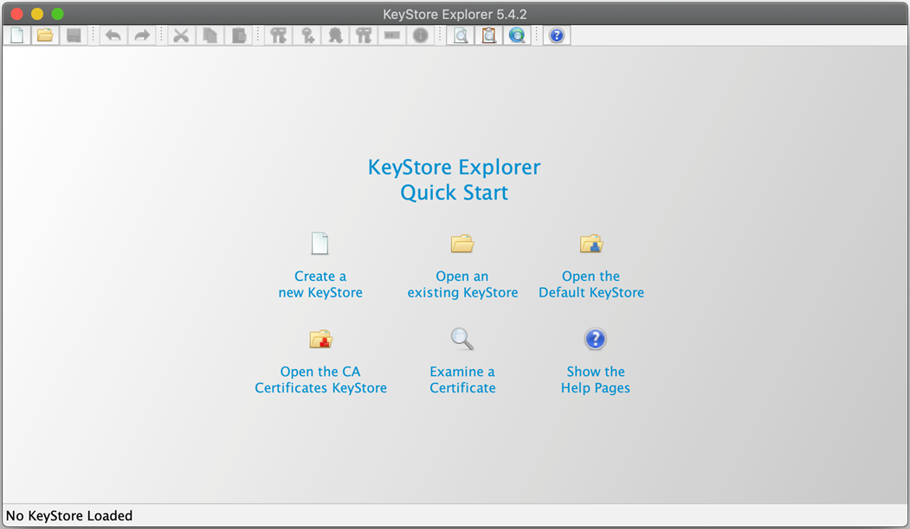 -
Click Create a new KeyStore.
-
Select JKS and click OK.
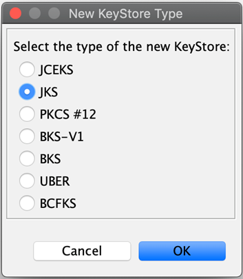
You will be presented with a new, unnamed, empty keystore. -
Save the keystore by clicking the "disk" icon .
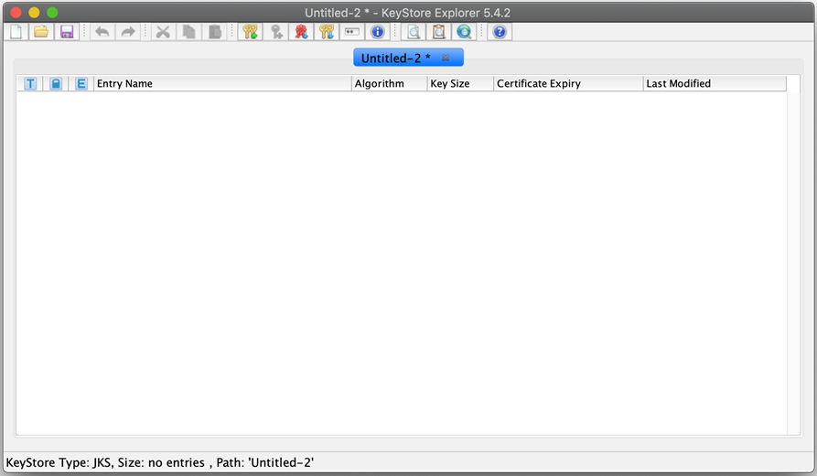 -
You are presented with the option to specify a password for your keystore. It is recommended to specify one.
If you do not wish to specify a password, click OK without entering anything.
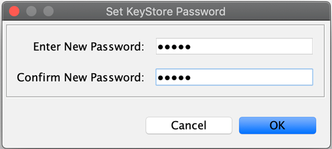 -
Specify a name for the keystore, keeping in mind the purpose and final content. Use a name specific to the DFSP you are creating this for. Throughout this section, we have used
payerfspas this is the test DFSP we used to document this process.
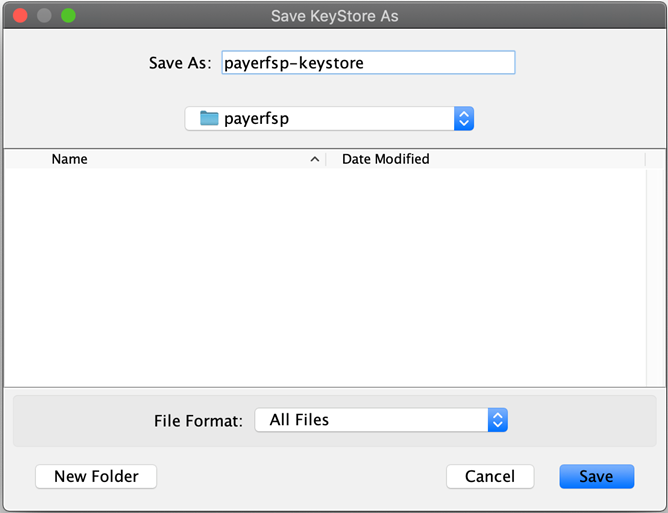
Create the root key pair
Once you have a keystore set up, the next step is to create the root key pair. Anywhere we talk about a CA-signed certificate, we are talking about the trusted chain created by using the root certificate, the intermediate certificate, and a server or client certificate. Remember that according to Mojaloop security requirements, a DFSP’s server certificate must be signed by the DFSP’s CA, whereas a DFSP’s client certificate must be signed by the Hub Operator’s CA.
To create a root key pair, complete the following steps:
-
Click the icon with the two golden keys and a green plus (+) sign 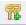. A window pops up where you can specify the Algorithm to use, as well as the Key Size.
-
Select RSA as the algorithm and specify the key size to be 4096.
NOTE: The required algorithm and key size may differ as per your scheme’s requirements. Ask for guidance from your Hub Operator. -
Click OK.
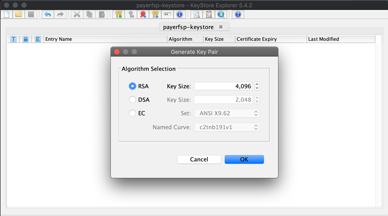 -
The Generate Key Pair Certificate window pops up.
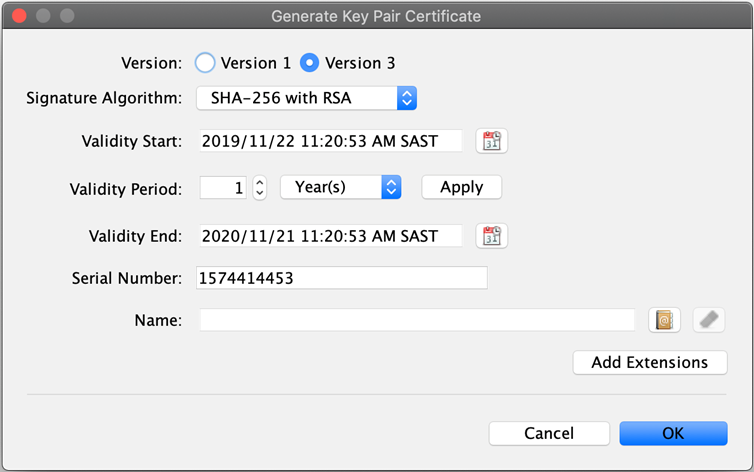 -
Set the validity period of the key pair. Set it to 10 years.
The examples shown may have different validity periods, but the general best practice is to have the root valid for 10 years, the intermediate level for 5 years, and the lowest level for 1 year.
Also note that the Hub Operator may have specific requirements that differ from these "defaults". -
Verify that Signature Algorithm is set to SHA-256 with RSA.
NOTE: The required signature algorithm may differ as per your scheme’s requirements. Ask for guidance from your Hub Operator. -
Add the required extensions for the type of key you are generating. Remember that in this example, we are generating the server root key pair.
-
Click Add Extensions. The Add Certificate Extensions window pops up.
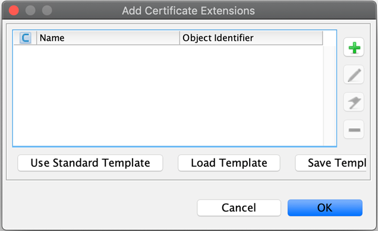 -
Click the green plus (+) sign to select the type of extension you are adding. The Add Extension Type window pops up.
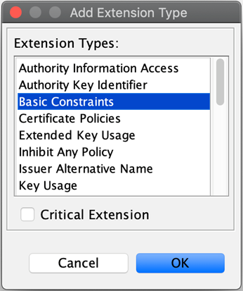 -
Select Basic Constraints, and tick the Critical Extensions checkbox.
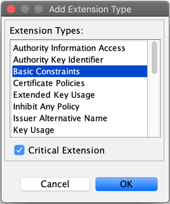 -
The Basic Constraints Extension window pops up. Tick the Subject is a CA checkbox, and click OK.
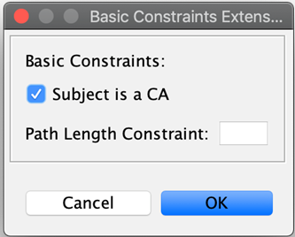 -
Back on the Add Certificate Extensions window, you will see the extension just added. Click OK.
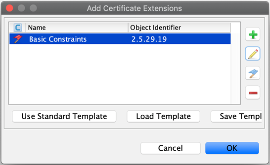
You are taken back to the main Generate Key Pair Certificate configuration screen. You have now successfully added the required extension.
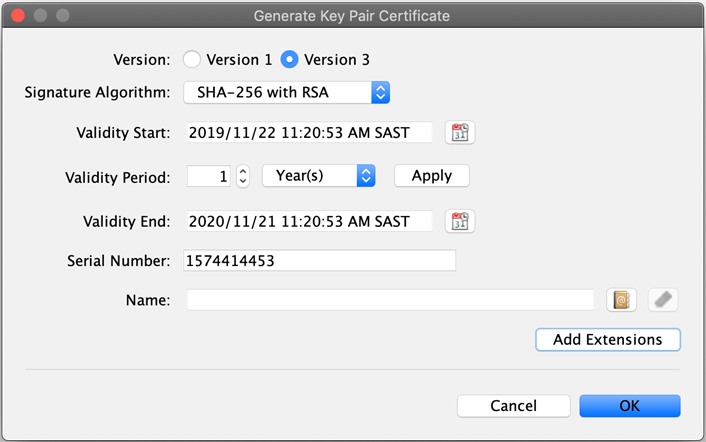 -
The root certificate will be used to sign any intermediate certificates that may be required so you must add an additional extension type (a certificate signing extension). Click Add Extensions.
-
On the Add Certificate Extensions window, click the green plus (+) sign to select the type of extension you are adding. The Add Extension Type window pops up.
-
Select Key Usage, and click OK.
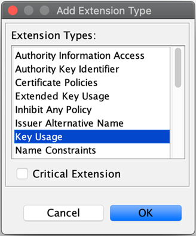 -
The Key Usage Extension window pops up. Select Certificate Signing, and click OK.
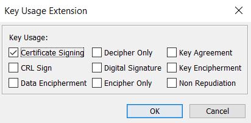
-
-
Specify metadata. Enter the following identification information: Common Name (CN), Organization Unit (OU), Organization Name (O), Locality Name (L), State Name (ST), Country (C), and Email (E).
Note that we have usedpayerfspthroughout. Replace all of those occurrences with the relevant DFSP name you are creating this key pair for. Also, use your own details for the fields.-
Click the book icon with the at (@) sign . You are presented with a list of fields to fill in.
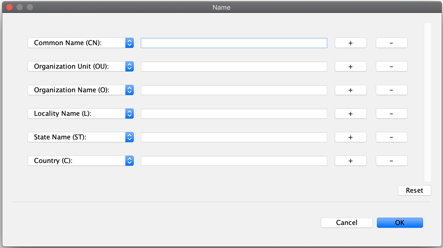 -
After you have filled in all of the fields, click the plus (+) sign 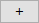 on the right of the last field. This will add another field to the list. Select the type of the field to be Email and specify the email address you want to associate with this key pair.
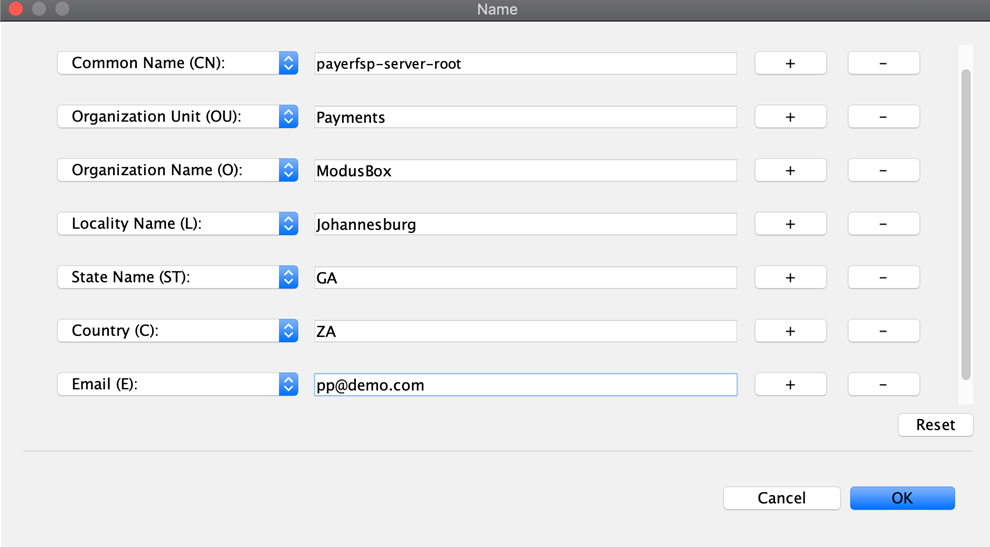 -
Click OK.
-
You are taken back to the main Generate Key Pair Certificate configuration screen. You have now filled in all of the required details for the new key pair.
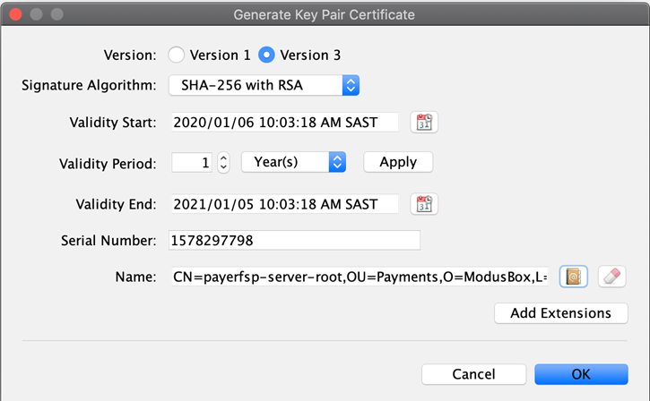
Click OK.
-
-
You are presented with the option to specify an alias for the key pair – normally leave this to be the suggested default value, which is the same as the Common Name (CN) value (the DFSP name with a "-server" or "-client" suffix, plus the relevant extension if there is any, in this case, "-root") specified in the detail in the previous screen.
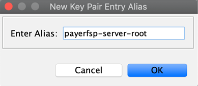 -
Click OK.
-
The New Key Pair Entry Password option for this key pair pops up.
You can leave this blank if you are generating this key pair for a test environment. For a production environment, a strong password should be set. Private keys must be managed carefully to ensure they are not exposed, ensure you follow your organization’s security requirements for private key management.
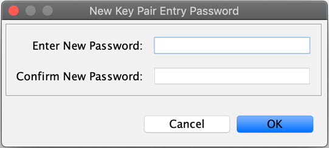
. Click OK.
You have successfully completed the generation of the root key pair. A window will pop up confirming that the key pair has been generated successfully.
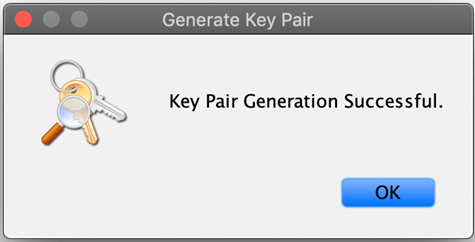
Create the intermediate key pair
To create an intermediate key pair:
-
Repeat the same process as above for the root key pair. All steps are the same as in the case of the root key pair, with the following exceptions:
-
The validity period for the key pair is 5 years according to best practice. Also note that the Hub Operator may have specific requirements that differ from this "default".
-
The Common Name is the DFSP name with a "-server" suffix, plus the relevant extension, in this case, "-intermediate" (
<dfspName>-server-intermediate).
-
-
Add the required extensions for the intermediate key pair by completing the steps exactly as they are specified in the previous section for the root key pair, replacing "root" with "intermediate" in all references.
-
Proceed to click the book icon with the at (@) sign to fill out the common name, organization unit, and so on, exactly as in the process followed for the server-root key.
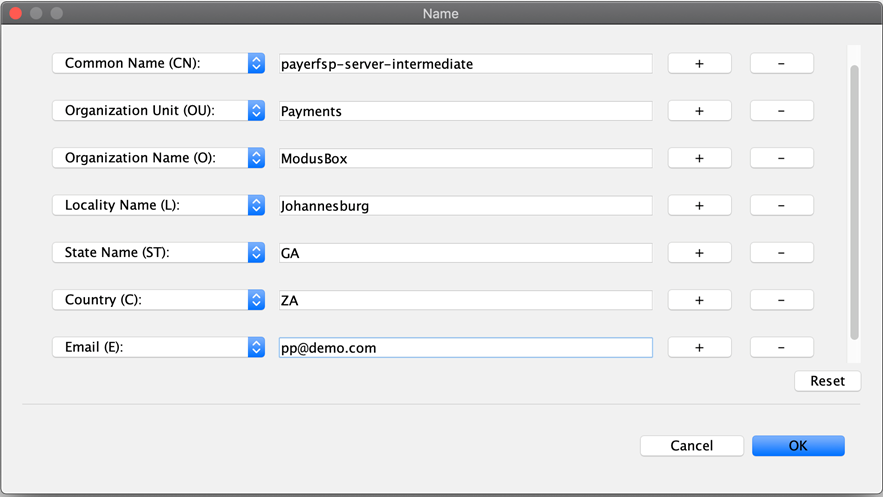 -
Click OK and see the results for the
<dfspName>-server-intermediatekey pair.
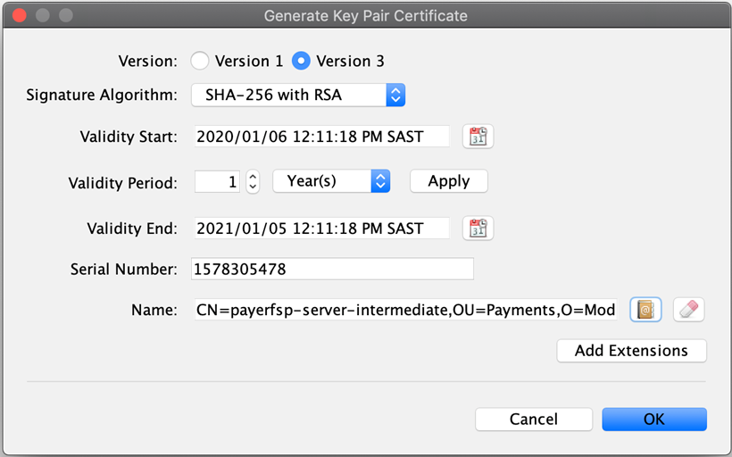 -
Click OK.
-
Enter the alias (use the value entered in the Common Name field as specified previously) to save this key pair, and click OK.
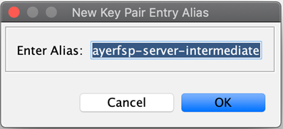 -
The New Key Pair Entry Password window for this key pair pops up. Leave this blank.
You can leave this blank if you are generating this key pair for a test environment. For a production environment, a strong password should be set. Private keys must be managed carefully to ensure they are not exposed, ensure you follow your organization’s security requirements for private key management.
-
Click OK.
Create server key pair and client key pair
The server and client key pairs are required to be at the bottom of the eventual keychain.
To create the server key pair and client key pair:
-
Repeat the same process as above for the root key pair. All steps are the same as in the case of the root key pair, with the following exceptions:
-
The validity period for this key pair is 1 year according to best practice. Also note that the Hub Operator may have specific requirements that differ from this "default".
-
The required extension is different.
-
Remember to use a relevant name: in the case of the server key pair, use
<dfspName>-serverand for the client key pair, use<dfspName>-client.
-
-
Add extensions for the server/client key pair. On the Generate Key Pair Certificate window, click Add Extensions. The Add Certificate Extensions window pops up.
-
The extension type for the key pair is called Extended Key Usage:
-
On the Add Certificate Extensions window, click the green plus (+) sign to select the type of extension you are adding. The Add Extension Type window pops up.
-
Select Extended Key Usage, and click OK.
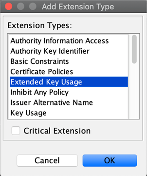 -
The Extended Key Usage Extension window pops up. Select TLS Web Client Authentication and TLS Web Server Authentication, then click OK.
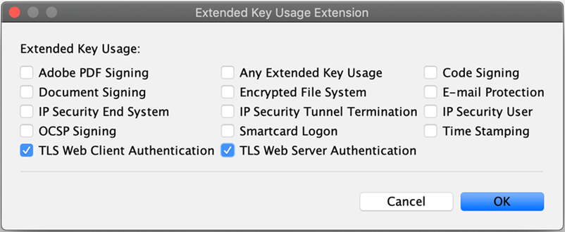 -
Back on the Add Certificate Extensions window, click OK.
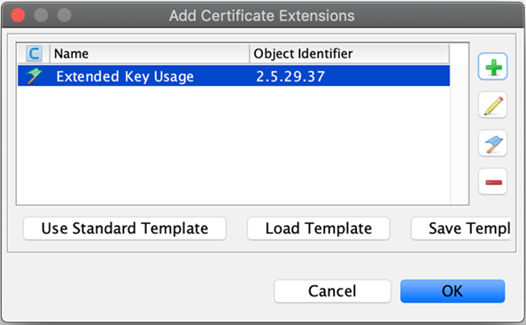
-
-
Specify the required metadata for all key pairs, ensuring you use the correct naming convention for the Common Name. For the lower-level server key pair, use the name
<dfspName>-serverand likewise for the client key pair, use<dfspName>-client.
Your keystore should look like this (you would replace the payerfsp name used in this example with the DFSP name that you are using).
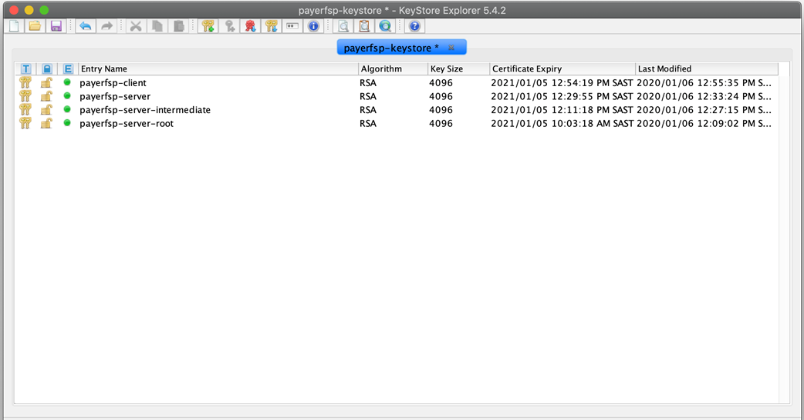
Once you have generated all required key pairs for use in TLS configuration (root key pair, intermediate key pair, server key pair, client key pair), you are ready to move on to signing your server certificate.
Create the server certificate chain of trust
This section describes the steps to follow in order to create the "server certificate chain of trust" out of the key pairs generated, where the top tier (= the root certificate) will sign the intermediate tier (= the intermediate certificate), which in turn signs the lowest tier (= the server certificate).
In the case of the system we use, the file will have an extension of .p7r – this type of file is not viewable with a text editor, but if you "pull" it into the empty space of KeyStore Explorer, you can view the contents, clearly seeing the hierarchy of the chain of trust as it builds up.
To sign all the required certificates, complete the following steps:
-
Generate a CSR from the intermediate key pair:
-
Right-click the intermediate key pair in your keystore and select Generate CSR.
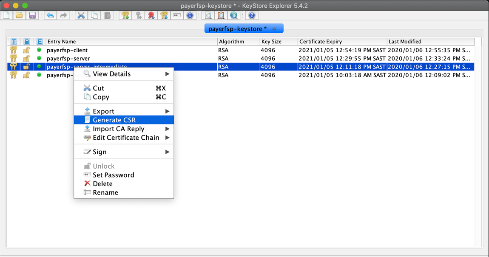 -
The Generate CSR window pops up. Verify the location and name of the CSR file to be generated, and accept the defaults as shown in the screen (the details shown will be different for you).
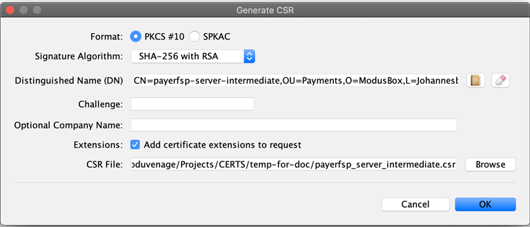 -
Click OK. A window will pop up saying that your CSR was generated successfully.
-
Navigate to the location where you saved the CSR in your file explorer to check if the CSR is there.
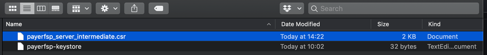
-
-
Get the intermediate key pair’s CSR signed by the root key pair:
-
Right-click the root key pair and select Sign, then Sign CSR.
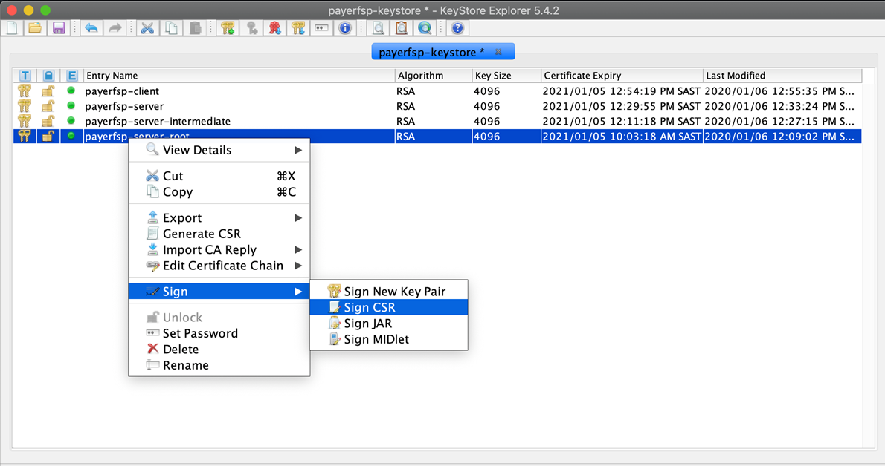 -
A Choose CSR window pops up. In the File field, select the CSR file of the intermediate key pair, and click Choose.
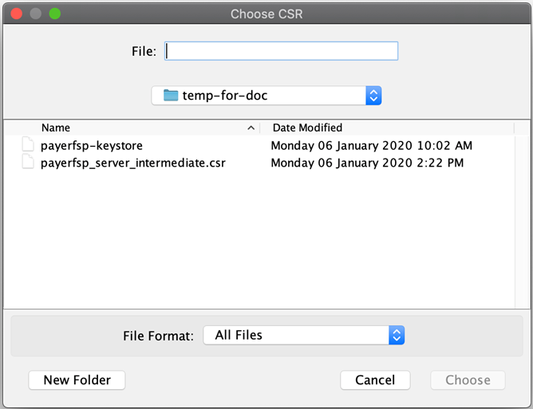 -
The Sign CSR window pops up. Click Transfer Extensions. This transfers the extensions in the signing tier to the requester tier, thereby carrying forward the key pair extensions.
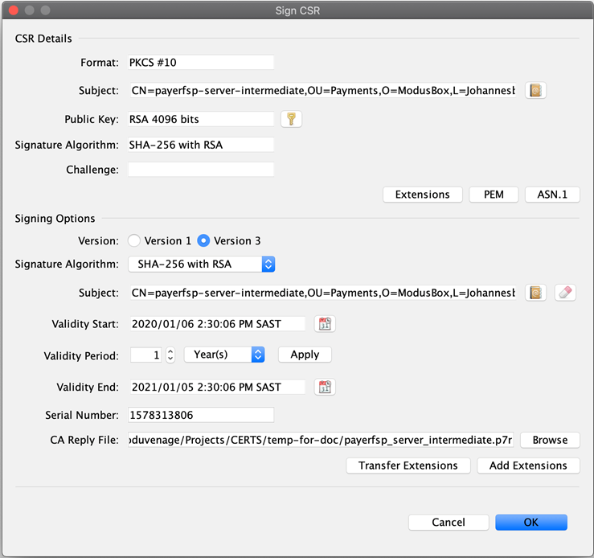 -
Click OK. A window will pop up saying that your CSR was signed successfully.
-
Note the newly generated file with the extension
.p7rin your file explorer. This is called the "sign response" file. 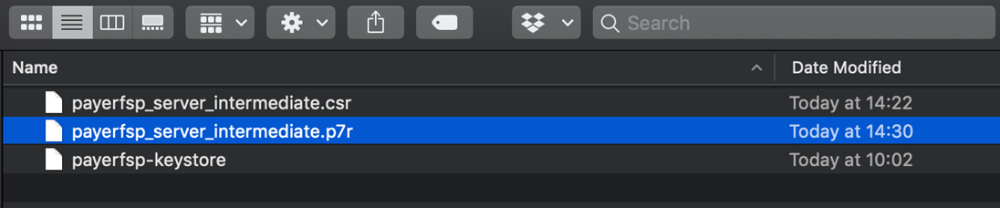
-
-
Import the intermediate CSR sign response into the intermediate key pair:
-
Right-click the intermediate key pair in the keystore, and select Import CA Reply, then From File.
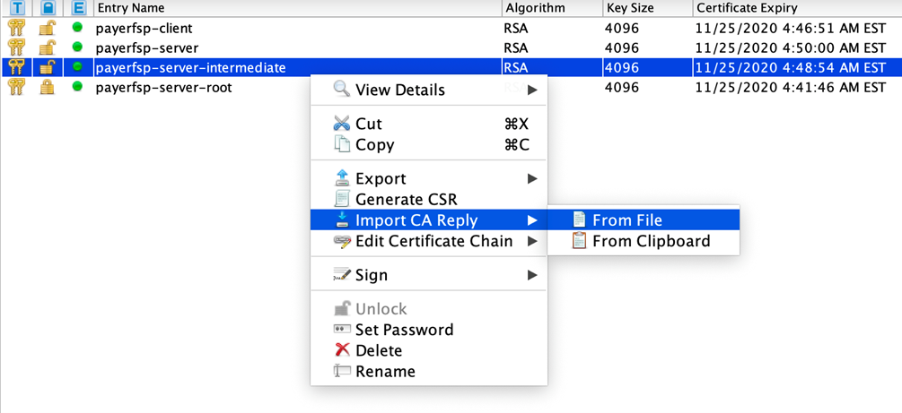 -
In the window that pops up, select the
<dfspName>-intermediate.p7rfile, and click Submit.
-
-
Generate a CSR for the server key pair:
-
Right-click the server key pair, and select Generate CSR.
-
The Generate CSR window pops up. Select the checkbox Add certificate extensions to request. Store the CSR in a location of your choice with the name
<dfspName>-server.csr.
-
-
Get the server key pair CSR signed by the intermediate key pair:
-
Right-click the intermediate key pair in the keystore, and select Sign, then Sign CSR.
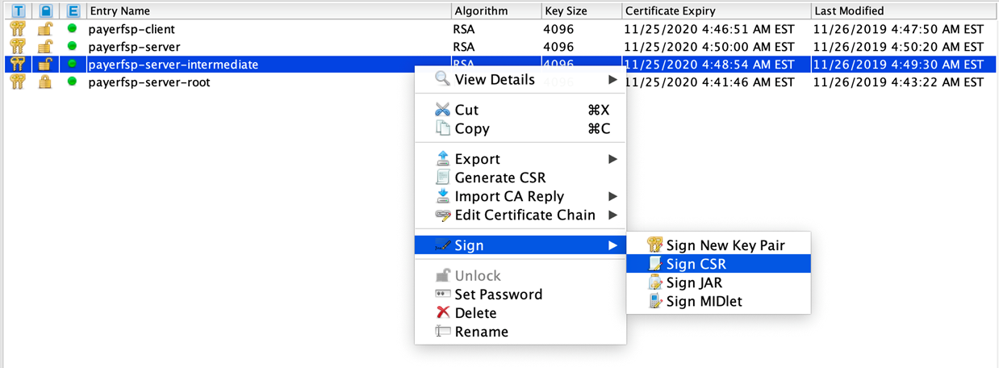 -
The Choose CSR window pops up. In the File field, select the server key pair CSR, and click Choose.
-
The Sign CSR window pops up. Click Transfer Extensions. Store the sign response
<dfspName>-server.p7rfile in a location of your choice. -
Click OK. This should generate
<dfspName>-server.p7r.
-
-
Import the server CSR sign response into the server key pair:
-
Right-click the server key pair in the keystore, and select Import CA Reply, then From File.
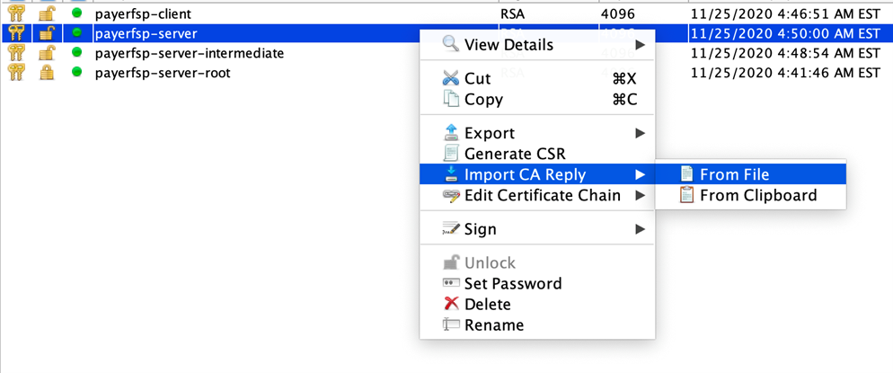 -
In the window that pops up, select
<dfspName>-server.p7r, and click Submit.
-
The following few screens show the contents of each key pair, starting with the root (with a single certificate level), then the intermediate (with two levels of certificates) and lastly, the server key pair (with three levels of certificates).
Note which certificate tier a screenshot is showing: the top of the screen will give you a clue to that (root, intermediate, or server). Also note how the Subject and Issuer change depending on which tier we are looking at (the Subject is always the current tier, while the Issuer is the tier above).
| You can view the contents of a key pair in KeyStore Explorer by double-clicking it. |
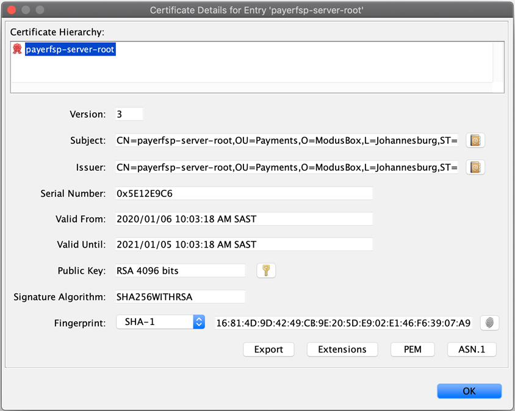
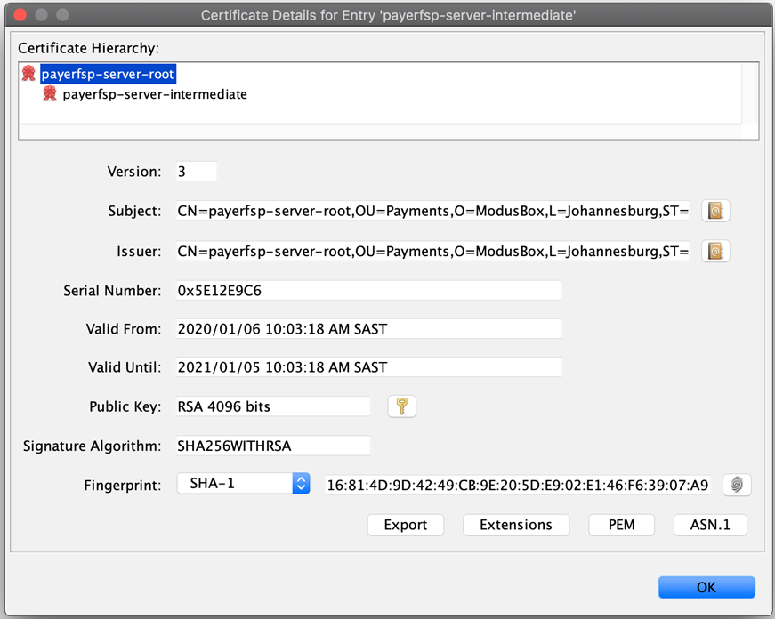
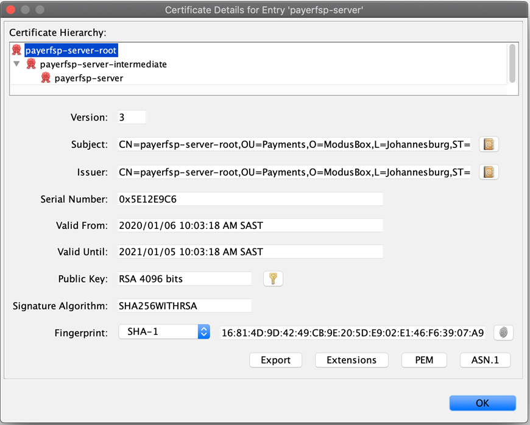
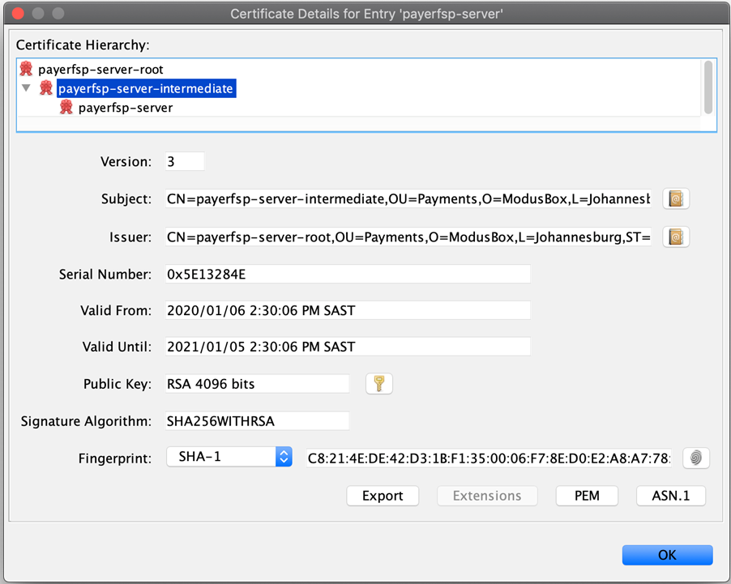
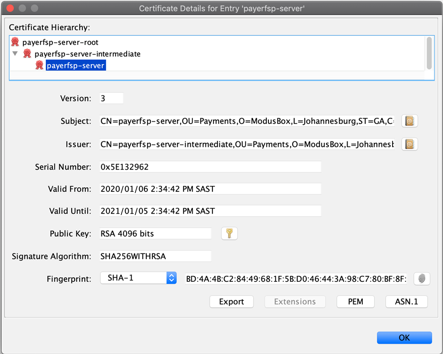
Export server certificates from key pairs
After you have generated the keys and the appropriate CSRs, signed them and imported the sign responses, the certificates are ready to be created by means of exporting them from the relevant key pairs.
To export a certificate from a key pair, complete the following steps:
-
Open the relevant keystore in KeyStore Explorer.
-
Right-click the relevant key pair in the keystore, select Export, then select Export Certificate Chain.
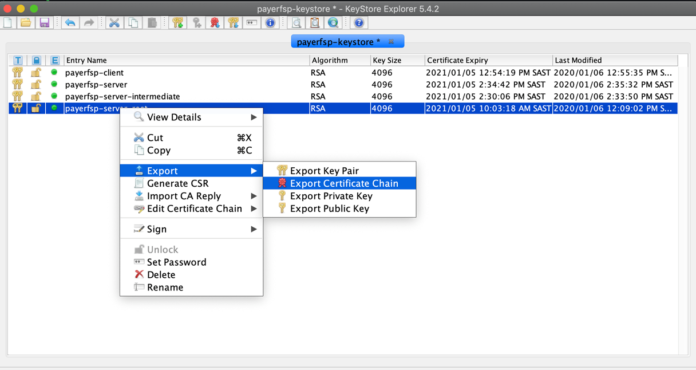 -
The Export Certificate Chain window pops up. Leave the default values as-is and click Export.
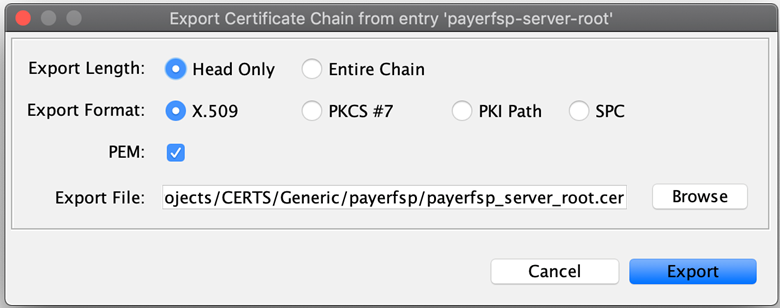
A window will pop up saying that the certificate chain has been exported successfully.
Perform these steps for each server key pair level:
-
<dfspName>-server-root -
<dfspName>-server-intermediate -
<dfspName>-server
You should now see the newly created (exported) certificate files (with the .cer extension) for each key pair.
These are the certificate files that you will upload to Connection Wizard > Phase 2: Technical Setup > Server Certificates Exchange.
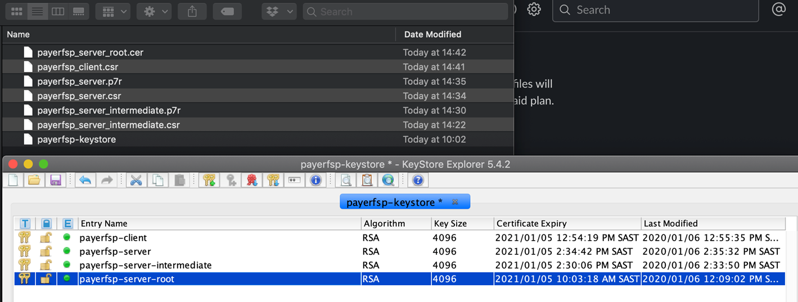
Create the client CSR
Remember that the client certificate has to be signed by the Hub Operator’s CA. For this to happen, you are required to share a CSR with the Hub Operator. To generate a client CSR from the client key pair, complete the following steps:
-
Right-click the client key pair in the keystore, and select Generate CSR.
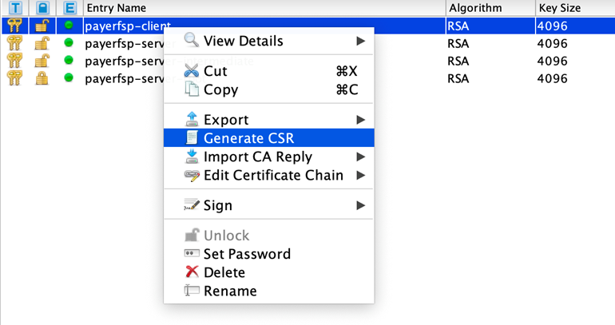 -
The Generate CSR window pops up. Verify the location and name of the CSR file to be generated and accept the defaults.
-
Click OK. A window will pop up saying that your CSR was generated successfully.
This is the CSR that you will upload to Connection Wizard > Phase 2: Technical Setup > CSR Exchange.